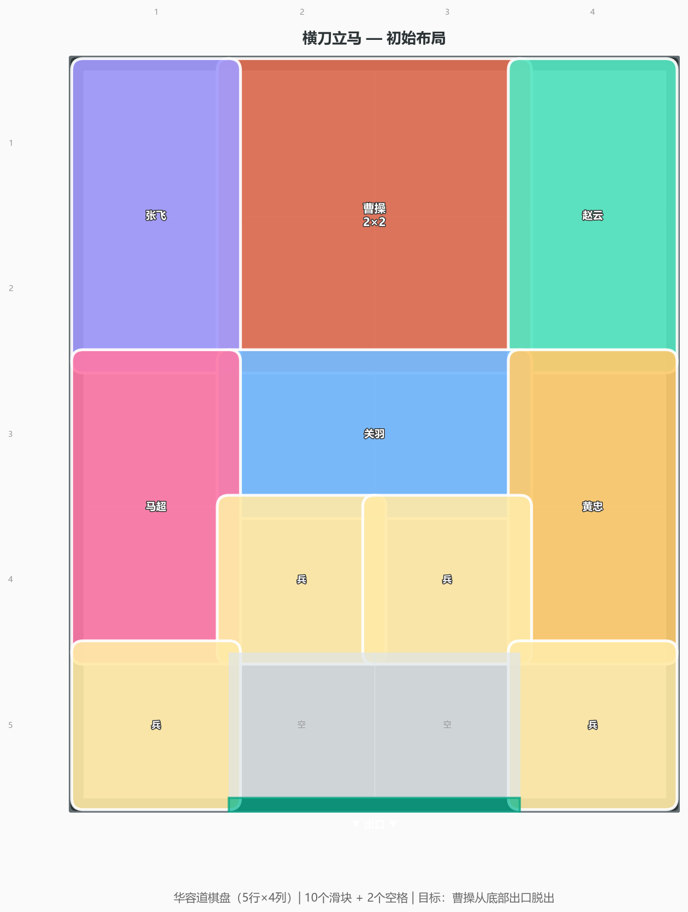
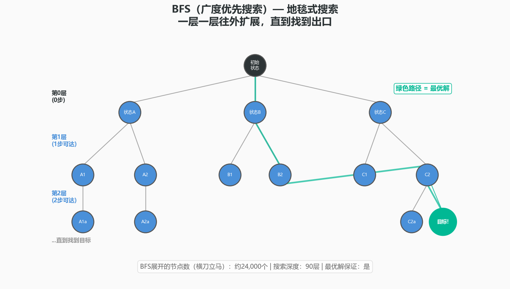
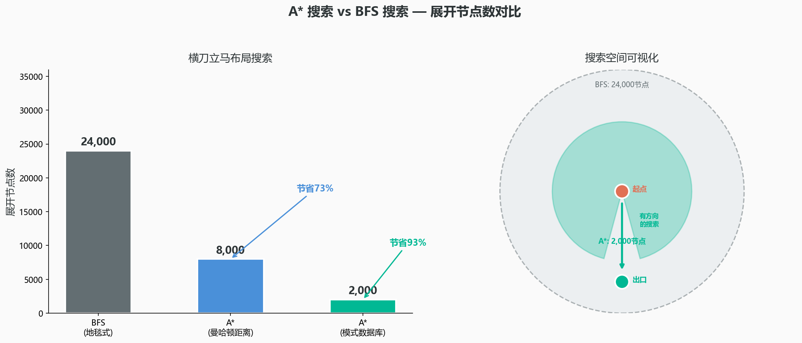
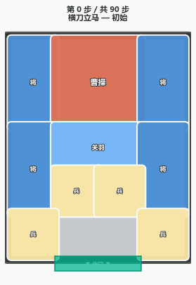

90步：华容道的最优解，和一个关于"聪明"的数学真相
你有没有玩过华容道？
一个木制棋盘，20个格子，10个滑块——曹操2×2，五虎将1×2或2×1，四个小兵1×1。目标只有一件事：让曹操从底部出口逃出去。
你试了几下。曹操被围得死死的。这时候，一个看似简单的问题浮现出来：
曹操最少需要多少步才能逃出华容道？
答案是90步。不是80步，不是82步——精确地90步。
但这个"90"是怎么来的？不是哪个聪明人"想"出来的——是一台计算机，用了一种叫"搜索算法"的方法，把所有的可能性都翻了一遍之后，才敢给出的答案。

在开始之前，先搞清三件事
第一，华容道的每一个局面，在数学里叫做一个"状态"。所有可能的状态，构成了"状态空间"。你要找到的，是从起点到目标的一条路径。
第二，计算机找这条路的方法叫"搜索"——它不是在"思考"，而是在"排查"。最朴素的搜索叫BFS（广度优先搜索），一层一层往外扩，像地毯式轰炸一样，保证能找到最短的路。
第三，但华容道的状态空间有几万到几十万个节点——地毯式搜索太慢了。于是有人发明了A*算法——给搜索加上一个"方向感"，让它优先往"看起来更近"的方向搜。这就像在迷宫里有了一只指南针。
搞清楚了这三件事，你就会发现：你解华容道时脑子里做的判断，和GPS导航规划路线、游戏AI选择走位、甚至DNA测序拼接基因片段——用的是同一种数学。
状态空间：华容道的"平行宇宙"
以最经典的"横刀立马"布局为例，它的可到达状态大约有三万个。
三万个状态，每个状态平均有2到4种合法滑动。如果你把每个状态画成一个节点，每次滑动画成一条边——你会得到一张巨大的网。这张网的直径是90——从起点到出口，最短路径的长度。
你的任务，就是在这张三万个节点的网中，找到那唯一一条长度为90的最短路径。
BFS：地毯式搜索——最笨但也最可靠
如果你在黑夜中迷路了，手里只有一盏灯笼，你会怎么找出口？
一个办法是：从脚下开始，先走一圈半径1米的圆圈，没找到；再走半径2米的圆圈……一层一层往外扩，直到碰上出口。
这就是BFS（广度优先搜索）——先探索所有1步能到的状态，再所有2步能到的，3步、4步……一层一层往外扩展。

BFS有一个很妙的性质：它保证找到的路径是最短的。因为它是按"步数"一层一层找的——第一次碰到目标状态的那一层，就是最短路径的长度。
但代价也很明显。对于横刀立马布局，BFS需要展开大约两万四千个节点。对计算机来说不算什么——一台普通笔记本几秒钟就能跑完。但如果让你手动BFS……你大概需要不眠不休地画三万个局面。
A*：给搜索装上指南针
1968年，斯坦福研究院的Peter Hart、Nils Nilsson和Bertram Raphael发明了A*算法。
A*和BFS的区别，就像在黑夜中找人——BFS是举着灯笼一圈一圈找，A*是带着指南针直接往最可能的方向找。这个"指南针"在数学里叫启发式函数。
A*为每个状态计算：
f(n) = g(n) + h(n)
"这个状态的总代价 = 你已经走了多少步 + 我估计你还要走多少步"
华容道最简单的估计函数是：曹操到出口的曼哈顿距离——即曹操当前位置到出口在纵横方向上差了多少格。更好的估计函数加上阻挡计数。更强的用模式数据库——预计算所有半棋盘排列的精确步数存储在大表中，搜索时直接查表，展开节点从三万降到约两千，效率提升93%。

2004年：90步的证明
横刀立马的最优解为什么是90步？2004年，这个问题的答案被正式确认：
- 用A*算法从起点到终点，找到了一条90步的路径——证明存在90步的解法。
- 把89步以内能到达的状态全部穷举——证明不存在更短的解法。
这让人想到另一个著名的数学证明——四色定理：1976年，Appel和Haken用计算机穷举了1936种构型后证明了任何地图只需四种颜色。当时数学界一片哗然。但事实是：人类的大脑可以理解证明的逻辑，却无法在不借助计算机的情况下验证每一个计算步骤。
华容道的90步证明，有着相同的数学味道：有些问题的答案，不是"想"出来的，而是"搜"出来的。

穷举思维——一个被严重低估的思维模型
很多人在面对复杂问题时，本能地想"想出最聪明的答案"。但有些问题的正确答案不是"想"出来的，而是被"搜"出来的。你需要的是设计一个好的搜索策略：怎么表示状态？怎么定义"更近"？怎么剪掉明显不对的分支？
这个思维模型不仅适用于数学。你去理解一个复杂行业——你是在状态空间中搜索"重要的认知节点"。你做一个产品的功能取舍——你是在搜索"最优的路径"。华容道看起来是个三个世纪前的中国玩具，但它的数学核心，是21世纪的人工智能。
想亲手试试？
- 换策略玩：下次拿出华容道，带着搜索算法的思维——当前状态有几种合法滑动？哪一种"看起来"离出口更近？你是在做BFS还是A*？
- 写代码：如果你会编程，用BFS写出华容道求解器，然后给它装上你自己的启发式函数。
- 一个挑战：华容道文献中流传着"81步最优解"的说法。如果你发现了比90步更短的解法，请把步骤发给我们。这不是争论——这是一个"让我们一起找到真相"的邀请。
你以为你在玩一个解谜游戏。其实，你的大脑在运行一个搜索算法——只是你不知道而已。